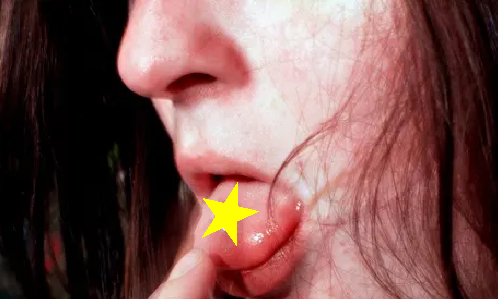

Before AI, soulless algo curation, psychopathic CEOs, and slop content took over?
...You came to the right place.
By clicking "JOIN" you agree to our terms and privacy conditions.
Already have an account? Sign in.
Download PI.FYI on the app store.
Perfectly Imperfect is the world's first social magazine.
Read cutting-edge editorial content from voices like Charli XCX, Francis Ford Coppola, Pink pantheress, and the Rizzler.
Discover music, films, books, and more, curated by our 80,000 users.
"Perfectly Imperfect gazes back nostalgically to an era when corporate algorithms didn’t control cultural discovery, and websites like The Strategist hadn’t streamlined product recommendations." - NYTimes.
"I have read Perfectly Imperfect for many years and have benefited greatly from this generous source of inspo." - Lorde.
"Perfectly Imperfect invites a wide berth of New York artists, writers, intellectuals, and scenesters to spiral on bits of personal ephemera, consciously rejecting the endless algorithmic scroll." - Interview Magazine.
"literally the only lifestyle recommendations u will ever need .. the best and only way to break out of the chokehold of algorithmically generated content recommendations and find some NEW SHIT!" - Rayne Fisher Quann.
"This is one of the only interviews he's enjoyed doing." - [Redacted]'s publicist.
"By showcasing the aesthetics, technologies, and even humor bubbling around various contemporary scenes, the newsletter is less about directing you on how to kit out your own life with the “right” goods, and more about cataloging the various flotsam of our time." - Vanity Fair.
"PI.FYI IS HARM REDUCTION FOR MY INTERNET ADDICTION." - A PI.FYI user.
